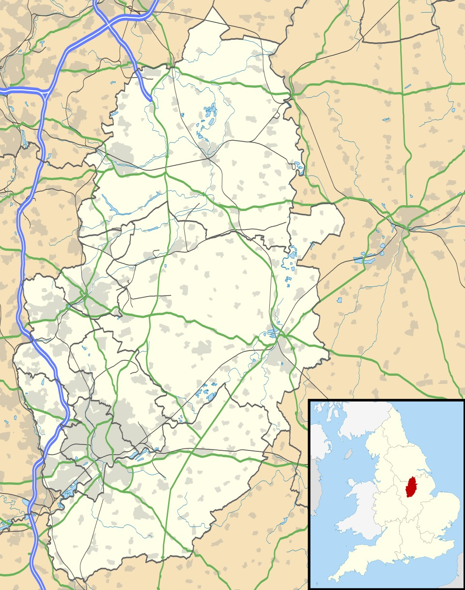

Cotgrave is a small town in South Nottingham.
Cotgrave has a population of 8,417.

Cotgrave is a former mining town. The Cotgrave Colliery was a major local employer from the 1960's until it closed in the 1990's.